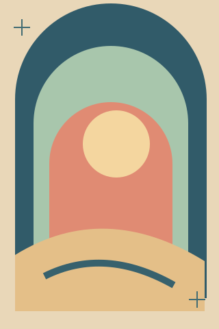
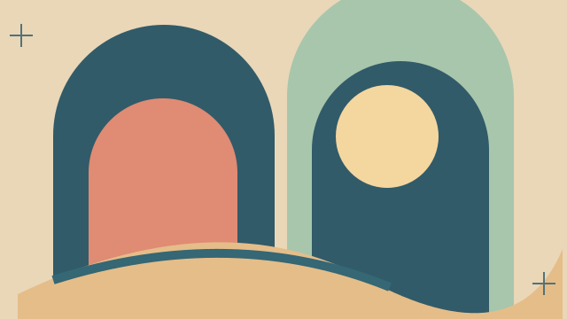

Portrait and landscape companion artworks
两幅相同视觉动机、但分别独立构图的矢量作品，并非同一张图片强制裁切或拉伸。

VG-071 · Portrait cut-paper vignette / 纵向剪纸插画
320×480, independent original source

VG-072 · Landscape cut-paper vignette / 横向剪纸插画
640×360, independent original source